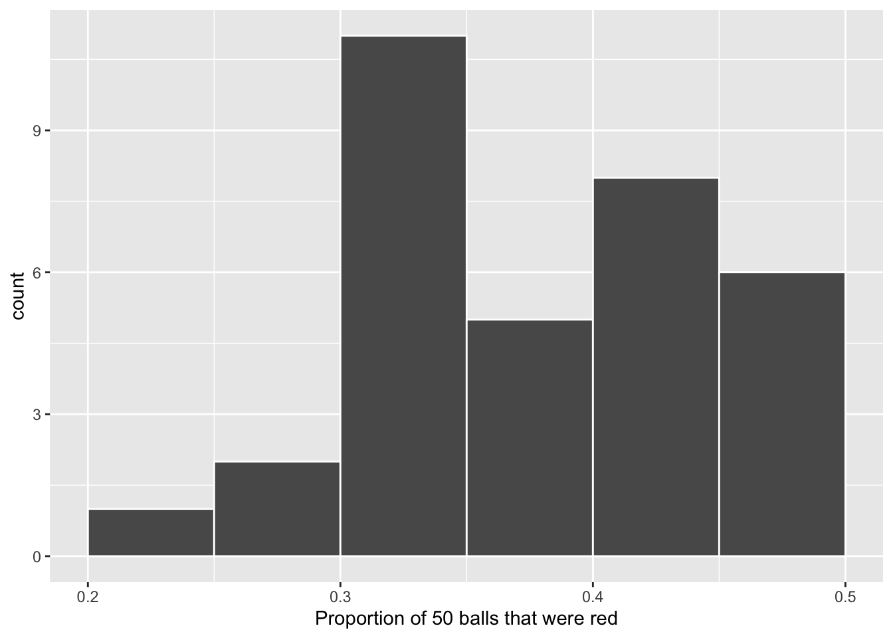
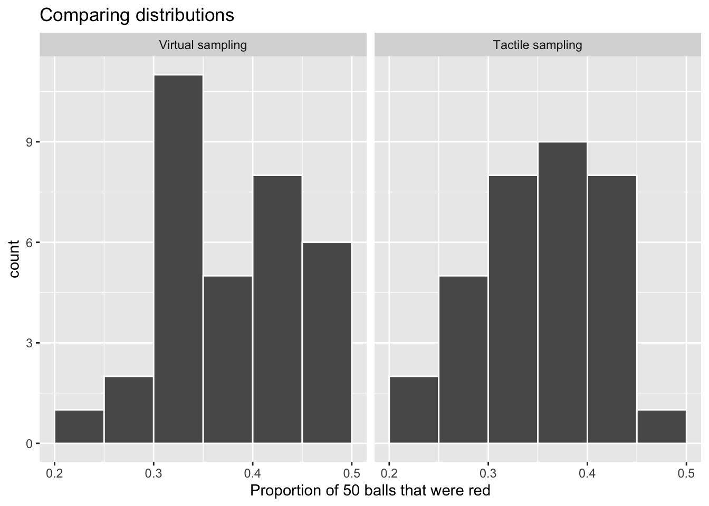
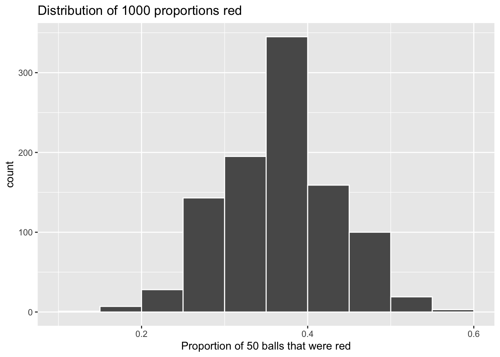
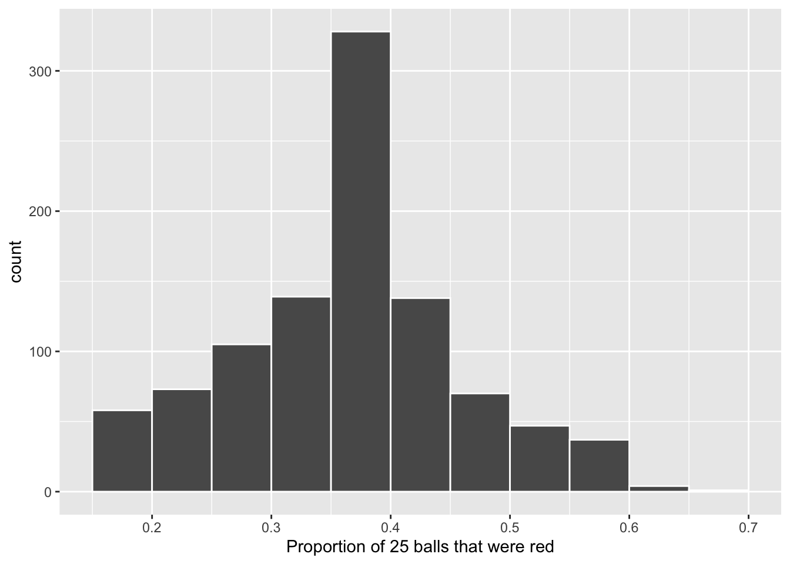
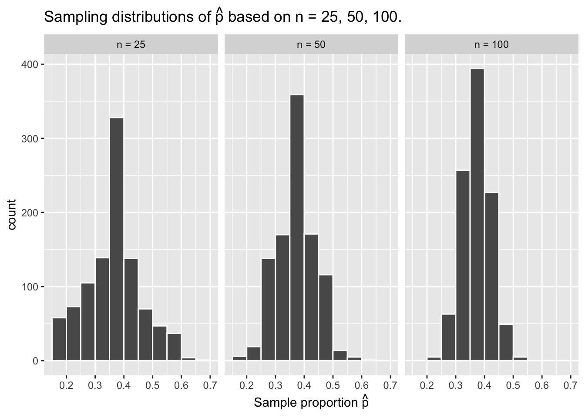
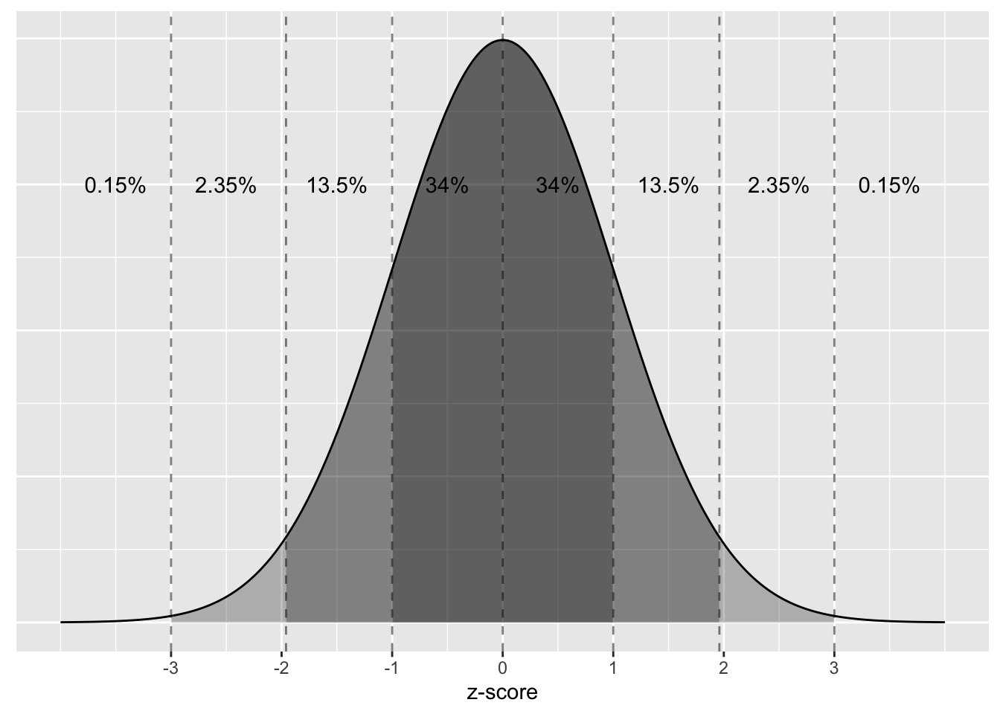

This week, we begin our adventure into statistical inference by learning about sampling. The concepts behind sampling form the basis of confidence intervals and hypothesis testing, which we’ll cover in the second portion of this week’s reading and next week. We will see that the skills you learned during the first three weeks of class, in particular data visualization and data wrangling, will also play an important role in the development of your understanding of sampling.
This week’s reading comes primarily from Chater 7 from ModernDive(Kim et al. 2020), with a smattering of my own ideas.
Take a look at the bowl in Figure 1. It has a certain number of red and a certain number of white balls all of equal size. Furthermore, it appears the bowl has been mixed beforehand, as there does not seem to be any coherent pattern to the spatial distribution of the red and white balls.
Let’s now ask ourselves, what proportion of this bowl’s balls are red?
One way to answer this question would be to perform an exhaustive count: remove each ball individually, count the number of red balls and the number of white balls, and divide the number of red balls by the total number of balls. However, this would be a long and tedious process.
1.2 Using the shovel once
Figure 2: Inserting a shovel into the bowl.
Figure 3: Removing 50 balls from the bowl.
Instead of performing an exhaustive count, let’s insert a shovel into the bowl as seen in Figure 2. Using the shovel, let’s remove \(5 \times 10 = 50\) balls, as seen in Figure 3.
Observe that 17 of the balls are red and thus 0.34 = 34% of the shovel’s balls are red. We can view the proportion of balls that are red in this shovel as a guess of the proportion of balls that are red in the entire bowl. While not as exact as doing an exhaustive count of all the balls in the bowl, our guess of 34% took much less time and energy to make.
However, say, we started this activity over from the beginning. In other words, we replace the 50 balls back into the bowl and start over. Would we remove exactly 17 red balls again? In other words, would our guess at the proportion of the bowl’s balls that are red be exactly 34% again? Maybe?
Figure 4: Repeating sampling activity 33 times.
What if we repeated this activity several times following the process, as shown in Figure 4? Would we obtain exactly 17 red balls each time? In other words, would our guess at the proportion of the bowl’s balls that are red be exactly 34% every time? Surely not. Let’s repeat this exercise several times with the help of 33 groups of friends to understand how the value differs with repetition.
1.3 Using the shovel 33 times
Each of our 33 groups of friends will do the following:
Use the shovel to remove 50 balls each.
Count the number of red balls and thus compute the proportion of the 50 balls that are red.
Return the balls into the bowl.
Mix the contents of the bowl a little to not let a previous group’s results influence the next group’s.
Each of our 33 groups of friends make note of their proportion of red balls from their sample collected. Each group then marks their proportion of their 50 balls that were red in the appropriate bin in a hand-drawn histogram as seen in Figure 5.
Figure 5: Constructing a histogram of proportions.
Recall from Week 2 that histograms allow us to visualize the distribution of a numerical variable. In particular, where the center of the values falls and how the values vary. A partially completed histogram of the first 10 out of 33 groups of friends’ results can be seen in Figure 5.
Figure 6: Hand-drawn histogram of first 10 out of 33 proportions.
Observe the following in the histogram in Figure 6:
At the low end, one group removed 50 balls from the bowl with proportion red between 0.20 and 0.25.
At the high end, another group removed 50 balls from the bowl with proportion between 0.45 and 0.5 red.
However, the most frequently occurring proportions were between 0.30 and 0.35 red, right in the middle of the distribution.
The shape of this distribution is somewhat bell-shaped.
Let’s construct this same hand-drawn histogram in R using your data visualization skills that you honed in Week 2! We saved our 33 groups of friends’ results in the tactile_prop_red data frame included in the moderndive package. Run the following to display the first 10 of 33 rows:
Observe for each group that we have their names, the number of red_balls they obtained, and the corresponding proportion out of 50 balls that were red named prop_red. We also have a replicate variable enumerating each of the 33 groups. We chose this name because each row can be viewed as one instance of a replicated (in other words repeated) activity: using the shovel to remove 50 balls and computing the proportion of those balls that are red.
Let’s visualize the distribution of these 33 proportions using geom_histogram() with binwidth = 0.05 in Figure 7. This is a computerized and complete version of the partially completed hand-drawn histogram you saw in Figure 6. Note that setting boundary = 0.4 indicates that we want a binning scheme such that one of the bins’ boundary is at 0.4. This helps us to more closely align this histogram with the hand-drawn histogram in Figure 6.
ggplot(tactile_prop_red, aes(x = prop_red)) +geom_histogram(binwidth =0.05, boundary =0.4, color ="white") +labs(x ="Proportion of 50 balls that were red", title ="Distribution of 33 proportions red")
Figure 7: Distribution of 33 proportions based on 33 samples of size 50.
1.4 What did we just do?
What we just demonstrated in this activity is the statistical concept of sampling. We would like to know the proportion of the bowl’s balls that are red. Because the bowl has a large number of balls, performing an exhaustive count of the red and white balls would be time-consuming. We thus extracted a sample of 50 balls using the shovel to make an estimate. Using this sample of 50 balls, we estimated the proportion of the bowl’s balls that are red to be 34%.
Moreover, because we mixed the balls before each use of the shovel, the samples were randomly drawn. Because each sample was drawn at random, the samples were different from each other. Because the samples were different from each other, we obtained the different proportions red observed in Figure 7. This is known as the concept of sampling variation.
The purpose of this sampling activity was to develop an understanding of two key concepts relating to sampling:
Understanding the effect of sampling variation.
Understanding the effect of sample size on sampling variation.
In the next section, we’ll mimic the hands-on sampling activity we just performed on a computer. This will allow us not only to repeat the sampling exercise much more than 33 times, but it will also allow us to use shovels with different numbers of slots than just 50.
Afterwards, we’ll present you with definitions, terminology, and notation related to sampling. As in many disciplines, such necessary background knowledge may seem inaccessible and even confusing at first. However, as with many difficult topics, if you truly understand the underlying concepts and practice, practice, practice, you’ll be able to master them.
To close this chapter, we’ll generalize the “sampling from a bowl” exercise to other sampling scenarios and present a theoretical result known as the Central Limit Theorem.
2 Virtual sampling
In the previous section, we performed a tactile sampling activity by hand. In other words, we used a physical bowl of balls and a physical shovel. We performed this sampling activity by hand first so that we could develop a firm understanding of the root ideas behind sampling. In this section, we’ll mimic this tactile sampling activity with a virtual sampling activity using a computer. In other words, we’ll use a virtual analog to the bowl of balls and a virtual analog to the shovel.
2.1 Using the virtual shovel once
Let’s start by performing the virtual analog of the tactile sampling exercise we performed before. We first need a virtual analog of the bowl seen in Figure Figure 1. To this end, we included a data frame named bowl in the moderndive package. The rows of bowl correspond exactly with the contents of the actual bowl.
bowl
# A tibble: 2,400 × 2
ball_ID color
<int> <chr>
1 1 white
2 2 white
3 3 white
4 4 red
5 5 white
6 6 white
7 7 red
8 8 white
9 9 red
10 10 white
# ℹ 2,390 more rows
Observe that bowl has 2400 rows, telling us that the bowl contains 2400 equally sized balls. The first variable ball_ID is used as an identification variable – none of the balls in the actual bowl are marked with numbers. The second variable color indicates whether a particular virtual ball is red or white. You can view the contents of the bowl in RStudio’s data viewer, scrolling through the contents to convince yourself that bowl is indeed a virtual analog of the actual bowl in Figure 1.
Now that we have a virtual analog of our bowl, we next need a virtual analog to the shovel seen in Figure 3 to generate virtual samples of 50 balls. We’re going to use the rep_sample_n() function included in the infer package. This function allows us to take repeated, or replicated, samples of size n from a given dataset.
Looking at the code below you should notice:
The dataset (bowl) is the first argument
size corresponds to the size of each sample
reps corresponds to the number of samples
replace corresponds to whether each sampled observation should be replaced after it is drawn
# A tibble: 50 × 3
# Groups: replicate [1]
replicate ball_ID color
<int> <int> <chr>
1 1 306 red
2 1 800 red
3 1 996 white
4 1 1143 white
5 1 874 red
6 1 189 white
7 1 2021 white
8 1 1093 white
9 1 1759 white
10 1 1413 white
# ℹ 40 more rows
Observe that virtual_shovel has 50 rows corresponding to our virtual sample of size 50. The ball_ID variable identifies which of the 2400 balls from bowl are included in our sample of 50 balls while color denotes its color. However, what does the replicate variable indicate? In virtual_shovel’s case, replicate is equal to 1 for all 50 rows. This is telling us that these 50 rows correspond to the first repeated/replicated use of the shovel, in our case our first sample. We’ll see shortly that when we “virtually” take 33 samples, replicate will take values between 1 and 33.
Let’s compute the proportion of balls in our virtual sample that are red using the dplyr data wrangling verbs you learned in Week 3. First, for each of our 50 sampled balls, let’s identify if it is red or not using a test for equality with ==. Let’s create a new Boolean variable is_red using the mutate() function:
# A tibble: 50 × 4
# Groups: replicate [1]
replicate ball_ID color is_red
<int> <int> <chr> <lgl>
1 1 306 red TRUE
2 1 800 red TRUE
3 1 996 white FALSE
4 1 1143 white FALSE
5 1 874 red TRUE
6 1 189 white FALSE
7 1 2021 white FALSE
8 1 1093 white FALSE
9 1 1759 white FALSE
10 1 1413 white FALSE
# ℹ 40 more rows
Observe that for every row where color == "red", the Boolean (logical) value TRUE is returned and for every row where color is not equal to "red", the Boolean FALSE is returned.
Second, let’s compute the number of balls out of 50 that are red using the summarize() function. Recall from Week 3 that summarize() takes a data frame with many rows and returns a data frame with a single row containing summary statistics, like the mean() or median(). In this case, we use the sum() function:
Why does this work? Because R treats TRUE like the number 1 and FALSE like the number 0. So summing the number of TRUEs and FALSEs is equivalent to summing 1’s and 0’s. In the end, this operation counts the number of balls where color is red. In our case, 17 of the 50 balls were red. However, you might have gotten a different number red because of the randomness of the virtual sampling.
Third and lastly, let’s compute the proportion of the 50 sampled balls that are red by dividing num_red by 50:
Great! 34% of virtual_shovel’s 50 balls were red! So based on this particular sample of 50 balls, our guess at the proportion of the bowl’s balls that are red is 34%. But remember from our earlier tactile sampling activity that if we repeat this sampling, we will not necessarily obtain the same value of 34% again. There will likely be some variation. In fact, our 33 groups of friends computed 33 such proportions whose distribution we visualized in Figure 6. We saw that these estimates varied. Let’s now perform the virtual analog of having 33 groups of students use the sampling shovel!
2.2 Using the virtual shovel 33 times
Recall that in our tactile sampling exercise, we had 33 groups of students each use the shovel, yielding 33 samples of size 50 balls. We then used these 33 samples to compute 33 proportions. In other words, we repeated / replicated using the shovel 33 times. We can perform this repeated / replicated sampling virtually by once again using our virtual shovel function rep_sample_n(), but by adding the reps = 33 argument. This is telling R that we want to repeat the sampling 33 times.
We’ll save these results in a data frame called virtual_samples. We provide a preview of the first 10 rows of virtual_samples below:
# A tibble: 1,650 × 3
# Groups: replicate [33]
replicate ball_ID color
<int> <int> <chr>
1 1 27 red
2 1 1706 white
3 1 538 white
4 1 2309 white
5 1 1244 red
6 1 1092 red
7 1 894 white
8 1 1591 white
9 1 38 white
10 1 2191 red
# ℹ 1,640 more rows
Observe that the first 50 rows of replicate are equal to 1. If you were to continue scrolling through the dataset (like you can in RStudio’s data previewer), you would find that the next 50 rows of replicate are equal to 2. This is telling us that the first 50 rows correspond to the first sample of 50 balls while the next 50 rows correspond to the second sample of 50 balls. This pattern continues for all reps = 33 replicates and thus virtual_samples has 33 \(\times\) 50 = 1650 rows.
Let’s now take virtual_samples and compute the resulting 33 proportions red. We’ll use the same dplyr verbs as before, but this time with an additional group_by() of the replicate variable. Recall from Week 3 that by assigning the grouping variable before we summarize(), we’ll obtain a different summary statistic for each level of our group variable. Thus, we should end up with 33 different proportions, since we have 33 different replicates. We display a preview of the first 10 out of 33 rows:
As with our 33 groups of friends’ tactile samples, there is variation in the resulting 33 virtual proportions red. Let’s visualize this variation in a histogram! In Figure 8 we’ve added binwidth = 0.05 and boundary = 0.4 arguments as well. Recall that setting boundary = 0.4 ensures a binning scheme with one of the bins’ boundaries at 0.4. Since the binwidth = 0.05 is also set, this will create bins with boundaries at 0.30, 0.35, 0.45, 0.5, etc. as well.
ggplot(data = virtual_prop_red, mapping =aes(x = prop_red)) +geom_histogram(binwidth =0.05, boundary =0.4, color ="white") +labs(x ="Proportion of 50 balls that were red")

Figure 8: Distribution of 33 proportions based on 33 samples of size 50.
Observe that we occasionally obtained proportions red that are less than 30%. On the other hand, we occasionally obtained proportions that are greater than 45%. However, the most frequently occurring proportions were between 35% and 40% (for 11 out of 33 samples). Why do we have these differences in proportions red? Because of sampling variation.
Let’s now compare our virtual results with our tactile results from the previous section in Figure 9. Observe that both histograms are somewhat similar in their center and variation, although not identical. These slight differences are again due to random sampling variation. Furthermore, observe that both distributions are somewhat bell-shaped.

Figure 9: Comparing 33 virtual and 33 tactile proportions red.
2.3 Using the virtual shovel 1000 times
Now say we want to study the effects of sampling variation not for 33 samples, but rather for a larger number of samples, say 1000! We have two choices at this point:
We could have our groups of friends manually take 1000 samples of 50 balls and compute the corresponding 1000 proportions. This would be a tedious and time-consuming task and would likely leave our friends upset with us.
We could use the power of R to automate this repetitive task!
I believe all of us would choose option 2, so let’s abandon tactile sampling in favor of only virtual sampling. Once again let’s use the rep_sample_n() function with sample size set to be 50 once again, but this time with the number of replicates (reps) set to 1000.
# A tibble: 50,000 × 3
# Groups: replicate [1,000]
replicate ball_ID color
<int> <int> <chr>
1 1 1178 white
2 1 212 red
3 1 1023 white
4 1 1127 white
5 1 38 white
6 1 452 red
7 1 2072 white
8 1 2254 white
9 1 111 white
10 1 669 white
# ℹ 49,990 more rows
Observe that now virtual_samples has 1000 \(\times\) 50 = 50000 rows, instead of the 33 \(\times\) 50 = 1650 rows from earlier. Using the same data wrangling code as earlier, let’s take the data frame virtual_samples with 1000 \(\times\) 50 = 50,000 rows and compute the resulting 1000 proportions of red balls.
Observe that we now have 1000 replicates of prop_red, the proportion of 50 balls that are red. Using the same code as earlier, let’s now visualize the distribution of these 1000 replicates of prop_red in a histogram in Figure 10.
ggplot(virtual_prop_red, aes(x = prop_red)) +geom_histogram(binwidth =0.05, boundary =0.4, color ="white") +labs(x ="Proportion of 50 balls that were red", title ="Distribution of 1000 proportions red")

Figure 10: Distribution of 1000 proportions based on 1000 samples of size 50.
Once again, the most frequently occurring proportions of red balls occur between 35% and 40%. Every now and then, we obtain proportions as low as between 20% and 25%, and others as high as between 55% and 60%. These are rare, however. Furthermore, observe that we now have a much more symmetric and smoother bell-shaped distribution. This distribution is, in fact, approximated well by a normal distribution. At this point we recommend you read the “Normal distribution” section (Appendix Section 5) for a brief discussion on the properties of the normal distribution.
2.4 Using different shovels
Now say instead of just one shovel, you have three choices of shovels to extract a sample of balls with: shovels of size 25, 50, and 100.
A shovel with 25 slots
A shovel with 50 slots
A shovel with 100 slots
Figure 11: Three shovels to extract three different sample sizes.
If your goal is still to estimate the proportion of the bowl’s balls that are red, which shovel would you choose? In our experience, most people would choose the largest shovel with 100 slots because it would yield the “best” guess of the proportion of the bowl’s balls that are red. Let’s define some criteria for “best” in this subsection.
Using our newly developed tools for virtual sampling, let’s unpack the effect of having different sample sizes! In other words, let’s use rep_sample_n() with size set to 25, 50, and 100, respectively, while keeping the number of repeated/replicated samples at 1000:
Virtually use the appropriate shovel to generate 1000 samples with size balls.
Compute the resulting 1000 replicates of the proportion of the shovel’s balls that are red.
Visualize the distribution of these 1000 proportions red using a histogram.
Run each of the following code segments individually and then compare the three resulting histograms.
# Segment 1: sample size = 25 ------------------------------# 1.a) Virtually use shovel 1000 timesvirtual_samples_25 <-rep_sample_n(bowl, size =25, reps =1000, replace =FALSE)# 1.b) Compute resulting 1000 replicates of proportion redvirtual_prop_red_25 <- virtual_samples_25 %>%group_by(replicate) %>%summarize(prop_red =sum(color =="red") /25)# 1.c) Plot distribution via a histogramggplot(data = virtual_prop_red_25, mapping =aes(x = prop_red)) +geom_histogram(binwidth =0.05, boundary =0.4, color ="white") +labs(x ="Proportion of 25 balls that were red") # Segment 2: sample size = 50 ------------------------------# 2.a) Virtually use shovel 1000 timesvirtual_samples_50 <-rep_sample_n(bowl, size =50, reps =1000, replace =FALSE)# 2.b) Compute resulting 1000 replicates of proportion redvirtual_prop_red_50 <- virtual_samples_50 %>%group_by(replicate) %>%summarize(prop_red =sum(color =="red") /50) # 2.c) Plot distribution via a histogramggplot(data = virtual_prop_red_50, mapping =aes(x = prop_red)) +geom_histogram(binwidth =0.05, boundary =0.4, color ="white") +labs(x ="Proportion of 50 balls that were red") # Segment 3: sample size = 100 ------------------------------# 3.a) Virtually using shovel with 100 slots 1000 timesvirtual_samples_100 <-rep_sample_n(bowl, size =100, reps =1000)# 3.b) Compute resulting 1000 replicates of proportion redvirtual_prop_red_100 <- virtual_samples_100 %>%group_by(replicate) %>%summarize(prop_red =sum(color =="red") /100) # 3.c) Plot distribution via a histogramggplot(data = virtual_prop_red_100, mapping =aes(x = prop_red)) +geom_histogram(binwidth =0.05, boundary =0.4, color ="white") +labs(x ="Proportion of 100 balls that were red")

(a) n = 25
(b) n = 50
(c) n = 100
Figure 12: Comparing the distributions of proportion red for different sample sizes.
For easy comparison, we present the three resulting histograms in a single row with matching x and y axes in Figure Figure 12.
Observe that as the sample size increases, the variation of the 1000 replicates of the proportion of red decreases. In other words, as the sample size increases, there are fewer differences due to sampling variation and the distribution centers more tightly around the same value. Eyeballing Figure 12, all three histograms appear to center around roughly 40%.
We can be numerically explicit about the amount of variation in our three sets of 1000 values of prop_red using the standard deviation. A standard deviation is a summary statistic that measures the amount of variation within a numerical variable (see Appendix Section 5) for a brief discussion on the properties of the standard deviation. For all three sample sizes, let’s compute the standard deviation of the 1000 proportions red by running the following data wrangling code that uses the sd() summary function.
# n = 25virtual_prop_red_25 %>%summarize(sd =sd(prop_red))
# A tibble: 1 × 1
sd
<dbl>
1 0.0945
# n = 50virtual_prop_red_50 %>%summarize(sd =sd(prop_red))
# A tibble: 1 × 1
sd
<dbl>
1 0.0671
# n = 100virtual_prop_red_100 %>%summarize(sd =sd(prop_red))
# A tibble: 1 × 1
sd
<dbl>
1 0.0482
Let’s compare these three measures of distributional variation in Table 1.
Table 1: Comparing standard deviations of proportions red for three different shovels.
Number of slots in shovel
Standard deviation of proportions red
25
0.095
50
0.067
100
0.048
3 Sampling framework
In both our tactile and our virtual sampling activities, we used sampling for the purpose of estimation. We extracted samples in order to estimate the proportion of the bowl’s balls that are red. We used sampling as a less time-consuming approach than performing an exhaustive count of all the balls. Our virtual sampling activity built up to the results shown in Figure 12 and Table 1 – comparing 1000 proportions red based on samples of size 25, 50, and 100. This was our first attempt at understanding two key concepts relating to sampling for estimation:
The effect of sampling variation on our estimates.
The effect of sample size on sampling variation.
Now that you have built some intuition relating to sampling, let’s now attach words and labels to the various concepts we’ve explored so far. Specifically in the next section, we’ll introduce terminology and notation as well as statistical definitions related to sampling. This will allow us to succinctly summarize and refer to the ideas behind sampling for the rest of this book.
3.1 Terminology and notation
Let’s now attach words and labels to the various sampling concepts we’ve seen so far by introducing some terminology and mathematical notation. While they may seem daunting at first, we’ll make sure to tie each of them to sampling bowl activities you performed earlier. Furthermore, throughout this book we’ll give you plenty of opportunity for practice, as the best method for mastering these terms is repetition.
The first set of terms and notation relate to populations:
A population is a collection of individuals or observations we are interested in. This is also commonly denoted as a study population. We mathematically denote the population’s size using upper-case \(N\).
A population parameter is some numerical summary about the population that is unknown but you wish you knew. For example, when this quantity is a mean like the average height of all Canadians, the population parameter of interest is the population mean.
A census is an exhaustive enumeration or counting of all \(N\) individuals in the population. We do this in order to compute the population parameter’s value exactly. Of note is that as the number \(N\) of individuals in our population increases, conducting a census gets more expensive (in terms of time, energy, and money).
So in our sampling activities, the population is the collection of \(N\) = 2400 identically sized red and white balls in the bowl shown in Figure 1. Recall that we also represented the bowl “virtually” in the data frame bowl:
bowl
# A tibble: 2,400 × 2
ball_ID color
<int> <chr>
1 1 white
2 2 white
3 3 white
4 4 red
5 5 white
6 6 white
7 7 red
8 8 white
9 9 red
10 10 white
# ℹ 2,390 more rows
The population parameter here is the proportion of the bowl’s balls that are red. Whenever we’re interested in a proportion of some value in a population, the population parameter has a specific name: the population proportion. We denote population proportions with the letter \(p\). We’ll see later on that we can also consider other types of population parameters, like population means and population slopes.
In order to compute this population proportion \(p\) exactly, we need to first conduct a census by going through all \(N\) = 2400 and counting the number that are red. We then divide this count by 2400 to obtain the proportion red.
You might be now asking yourself: “Wait. I understand that performing a census on the actual bowl would take a long time. But can’t we conduct a ‘virtual’ census using the virtual bowl?” You are absolutely correct! In fact when the ModernDive authors created the bowl data frame, they made its contents match the contents of actual bowl not by doing a census, but by reading the contents written on the box the bowl came in!
Let’s conduct this “virtual” census by using the same dplyr verbs you used earlier to count the number of balls that are red:
summarize(bowl, total_red =sum(color =="red") )
# A tibble: 1 × 1
total_red
<int>
1 900
Since 900 of the 2400 are red, the proportion is 900/2400 = 0.375 = 37.5%. So we know the value of the population parameter: in our case, the population proportion \(p\) is equal to 0.375.
At this point, you might be further asking yourself: “If we had a way of knowing that the proportion of the balls that are red is 37.5%, then why did we do any sampling?” Great question! Normally, you wouldn’t do any sampling! However, the sampling activities we did this chapter are merely simulations of how sampling is done in real-life! We perform these simulations in order to study:
The effect of sampling variation on our estimates.
The effect of sample size on sampling variation.
In real-life sampling not only will the population size \(N\) be very large making a census expensive, but sometimes we won’t even know how big the population is! For now however, we press on with our next set of terms and notation.
The second set of terms and notation relate to samples:
Sampling is the act of collecting a sample from the population, which we generally only do when we can’t perform a census. We mathematically denote the sample size using lower case \(n\), as opposed to upper case \(N\) which denotes the population’s size. Typically the sample size \(n\) is much smaller than the population size \(N\). Thus sampling is a much cheaper alternative than performing a census.
A point estimate, also known as a sample statistic, is a summary statistic computed from a sample that estimates the unknown population parameter.
So previously we conducted sampling using a shovel with 50 slots to extract samples of size \(n\) = 50. To perform the virtual analog of this sampling, recall that we used the rep_sample_n() function as follows:
# A tibble: 50 × 3
# Groups: replicate [1]
replicate ball_ID color
<int> <int> <chr>
1 1 231 red
2 1 1308 red
3 1 1306 white
4 1 2274 red
5 1 1627 white
6 1 2195 white
7 1 527 red
8 1 1744 white
9 1 1054 red
10 1 1223 red
# ℹ 40 more rows
Using the sample of 50 balls contained in virtual_shovel, we generated an estimate of the proportion of the bowl’s balls that are red prop_red
So in our case, the value of prop_red is the point estimate of the population proportion \(p\) since it estimates the latter’s value. Furthermore, this point estimate has a specific name when considering proportions: the sample proportion. It is denoted using \(\widehat{p}\) because it is a common convention in statistics to use a “hat” symbol to denote point estimates.
The third set of terms relate to sampling methodology: the method used to collect samples. You’ll see here and throughout the rest of your book that the way you collect samples directly influences their quality.
A sample is said to be representative if it roughly “looks like” the population. In other words, if the sample’s characteristics are a “good” representation of the population’s characteristics.
We say a sample is generalizable if any results based on the sample can generalize to the population. In other words, if we can make “good” guesses about the population using the sample.
We say a sampling procedure is biased if certain individuals in a population have a higher chance of being included in a sample than others. We say a sampling procedure is unbiased if every individual in a population has an equal chance of being sampled.
We say a sample of \(n\) balls extracted using our shovel is representative of the population if it’s contents “roughly resemble” the contents of the bowl. If so, then the proportion of the shovel’s balls that are red can generalize to the proportion of the bowl’s \(N\) = 2400 balls that are red. Or expressed differently, \(\widehat{p}\) is a “good guess” of \(p\). Now say we cheated when using the shovel and removed a number of white balls in favor of red balls. Then this sample would be biased towards red balls, and thus the sample would no longer be representative of the bowl.
The fourth and final set of terms and notation relate to the goal of sampling:
One way to ensure that a sample is unbiased and representative of the population is by using random sampling
Inference is the act of “making a guess” about some unknown. Statistical inference is the act of making a guess about a population using a sample.
In our case, since the rep_sample_n() function uses your computer’s random number generator, we were in fact performing random sampling.
Let’s now put all four sets of terms and notation together, keeping our sampling activities in mind:
Since we extracted a sample of \(n\) = 50 balls at random, we mixed all of the equally sized balls before using the shovel, then
the contents of the shovel are unbiased and representative of the contents of the bowl, thus
any result based on the shovel can generalize to the bowl, thus
the sample proportion \(\widehat{p}\) of the \(n\) = 50 balls in the shovel that are red is a “good guess” of the population proportion \(p\) of the bowl’s \(N\) = 2400 balls that are red, thus
instead of conducting a census of the 2400 balls in the bowl, we can infer about the bowl using the sample from the shovel.
What you have been performing is statistical inference. This is one of the most important concepts in all of statistics. So much so, we included this term in the title of our book: “Statistical Inference via Data Science”. More generally speaking,
If the sampling of a sample of size \(n\) is done at random, then
the sample is unbiased and representative of the population of size \(N\), thus
any result based on the sample can generalize to the population, thus
the point estimate is a “good guess” of the unknown population parameter, thus
instead of performing a census, we can infer about the population using sampling.
In the second reading this week, we’ll introduce the infer package, which makes statistical inference “tidy” and transparent.
3.2 Statistical definitions
To further attach words and labels to the various sampling concepts we’ve seen so far, we also introduce some important statistical definitions related to sampling. As a refresher of our 1000 repeated / replicated virtual samples of size \(n\) = 25, \(n\) = 50, and \(n\) = 100 in Section 2, let’s display Figure 12 again.
n = 25
n = 50
n = 100
These types of distributions have a special name: sampling distributions of point estimates. Their visualization displays the effect of sampling variation on the distribution of any point estimate, in this case, the sample proportion \(\widehat{p}\). Using these sampling distributions, for a given sample size \(n\), we can make statements about what values we can typically expect. Unfortunately, the term sampling distribution is often confused with a sample’s distribution which is merely the distribution of the values in a single sample.
For example, observe the centers of all three sampling distributions: they are all roughly centered around 0.4 = 40%. Furthermore, observe that while we are somewhat likely to observe sample proportions of red balls of 0.2 = 20% when using the shovel with 25 slots, we will almost never observe a proportion of 20% when using the shovel with 100 slots. Observe also the effect of sample size on the sampling variation. As the sample size \(n\) increases from 25 to 50 to 100, the variation of the sampling distribution decreases and thus the values cluster more and more tightly around the same center of around 40%. We quantified this variation using the standard deviation of our sample proportions in Table 1, which we display again below:
Previously seen comparing standard deviations of proportions red for three different shovels
Number of slots in shovel
Standard deviation of proportions red
25
0.095
50
0.067
100
0.048
So as the sample size increases, the standard deviation of the proportion of red balls decreases. This type of standard deviation has another special name: standard error of a point estimate. Standard errors quantify the effect of sampling variation induced on our estimates. In other words, they quantify how much we can expect different proportions of a shovel’s balls that are red to vary from one sample to another sample to another sample, and so on. As a general rule, as sample size increases, the standard error decreases.
Similarly to confusion between sampling distributions with a sample’s distribution, people often confuse the standard error with the standard deviation. This is especially the case since a standard error is itself a kind of standard deviation. The best advice we can give is that a standard error is merely a kind of standard deviation: the standard deviation of any point estimate from sampling. In other words, all standard errors are standard deviations, but not every standard deviation is necessarily a standard error.
To help reinforce these concepts, let’s re-display Figure 12 but using our new terminology, notation, and definitions relating to sampling in Figure 13.

Figure 13: Three sampling distributions of the sample proportion \(\widehat{p}\).
Furthermore, let’s re-display Table 1 but using our new terminology, notation, and definitions relating to sampling in Table 2.
Table 2: Standard errors of the sample proportion based on sample sizes of 25, 50, and 100
Sample size (n)
Standard error of $\widehat{p}$
n = 25
0.095
n = 50
0.067
n = 100
0.048
Remember the key message of this last table: that as the sample size \(n\) goes up, the “typical” error of your point estimate will go down, as quantified by the standard error.
3.3 The moral of the story
Let’s recap this section so far. We’ve seen that if a sample is generated at random, then the resulting point estimate is a “good guess” of the true unknown population parameter. In our sampling activities, since we made sure to mix the balls first before extracting a sample with the shovel, the resulting sample proportion \(\widehat{p}\) of the shovel’s balls that were red was a “good guess” of the population proportion \(p\) of the bowl’s balls that were red.
However, what do we mean by our point estimate being a “good guess”? Sometimes, we’ll get an estimate that is less than the true value of the population parameter, while at other times we’ll get an estimate that is greater. This is due to sampling variation. However, despite this sampling variation, our estimates will “on average” be correct and thus will be centered at the true value. This is because our sampling was done at random and thus in an unbiased fashion.
In our sampling activities, sometimes our sample proportion \(\widehat{p}\) was less than the true population proportion \(p\), while at other times it was greater. This was due to the sampling variability. However, despite this sampling variation, our sample proportions \(\widehat{p}\) were “on average” correct and thus were centered at the true value of the population proportion \(p\). This is because we mixed our bowl before taking samples and thus the sampling was done at random and thus in an unbiased fashion. This is also known as having an accurate estimate.
Recall from earlier that the value of the population proportion \(p\) of the \(N\) = 2400 balls in the bowl was 900/2400 = 0.375 = prop_red * 100%. We computed this value by performing a virtual census of bowl. Let’s re-display our sampling distributions from Figure 12 and Figure 13, but now with a vertical red line marking the true population proportion \(p\) of balls that are red = 37.5% in Figure 14. We see that while there is a certain amount of error in the sample proportions \(\widehat{p}\) for all three sampling distributions, on average the \(\widehat{p}\) are centered at the true population proportion red \(p\).
Figure 14: Three sampling distributions with population proportion \(p\) marked by vertical line.
We also saw in this section that as your sample size \(n\) increases, your point estimates will vary less and less and be more and more concentrated around the true population parameter. This variation is quantified by the decreasing standard error. In other words, the typical error of your point estimates will decrease. In our sampling exercise, as the sample size increased, the variation of our sample proportions \(\widehat{p}\) decreased. You can observe this behavior in Figure 14. This is also known as having a precise estimate.
So random sampling ensures our point estimates are accurate, while on the other hand having a large sample size ensures our point estimates are precise. While the terms “accuracy” and “precision” may sound like they mean the same thing, there is a subtle difference. Accuracy describes how “on target” our estimates are, whereas precision describes how “consistent” our estimates are. Figure 15 illustrates the difference.
Figure 15: “Comparing accuracy and precision.”
At this point, you might be asking yourself: “Why did we take 1000 repeated samples of size n = 25, 50, and 100? Shouldn’t we be taking only one sample that’s as large as possible?”. If you did ask yourself these questions, your suspicion is correct! Recall from earlier when we asked ourselves “If we had a way of knowing that the proportion of the balls that are red is 37.5%, then why did we do any sampling?” Similarly, we took 1000 repeated samples as a simulation of how sampling is done in real-life! We used these simulations to study:
The effect of sampling variation on our estimates.
The effect of sample size on sampling variation.
This is not how sampling is done in real life! In a real-life scenario, we wouldn’t take 1000 repeated/replicated samples, but rather a single sample that’s as large as we can afford. In the next chapter you will read about methods we can use to approximate these sampling distributions, when we have only one sample.
4 Central Limit Theorem
This chapter began with (virtual) access to a large bowl of balls (our population) and a desire to figure out the proportion of red balls. Despite having access to this population, in reality, you almost never will have access to the population, either because the population is too large, ever changing, or too expensive to take a census of. Accepting this reality means accepting that we need to use statistical inference.
In Section 3.1, we stated that “statistical inference is the act of making a guess about a population using a sample.” But how do we do this inference? In the previous section, we defined the sampling framework only to state that in reality we take one large sample, instead of many samples as done in the sampling framework (which we modeled physically by taking many samples from the bowl).
In reality, we take only one sample and use that one sample to make statements about the population parameter. This ability of making statements about the population is allowable by a famous theorem, or mathematically proven truth, called the Central Limit Theorem. What you visualized in Figure 12 and Figure 13 and summarized in Table 1 and Table 2 was a demonstration of this theorem. It loosely states that when sample means are based on larger and larger sample sizes, the sampling distribution of these sample means becomes both more and more normally shaped and more and more narrow.
In other words, as our sample size gets larger (1) the sampling distribution of a point estimate (like a sample proportion) increasingly follows a normal distribution and (2) the variation of these sampling distributions gets smaller, as quantified by their standard errors. We discuss the properties of the normal distribution in Appendix Section 5.1.
Shuyi Chiou, Casey Dunn, and Pathikrit Bhattacharyya created a 3-minute and 38-second video at https://youtu.be/jvoxEYmQHNM explaining this crucial statistical theorem using the average weight of wild bunny rabbits and the average wingspan of dragons as examples. It’s very clever!
Figure 16
Here’s what is so surprising about the Central Limit Theorem: regardless of the shape of the underlying population distribution, the sampling distribution of means (such as the sample mean of bunny weights or the sample mean of the length of dragon wings) and proportions (such as the sample proportion red in our shovels) will be normal. Normal distributions are defined by where they are centered and how wide they are, and the Central Limit Theorem gives us both:
The sampling distribution of the point estimate is centered at the true population parameter
We have an estimate for how wide the sampling distribution of the point estimate is, given by the standard error (which we will discuss in the next chapter on confidence intervals)
What the Central Limit Theorem creates for us is a ladder between a single sample and the population. By the Central Limit Theorem, we can say that (1) our sample’s point estimate is drawn from a normal distribution centered at the true population parameter and (2)that the width of that normal distribution is governed by the standard error of our point estimate. Relating this to our bowl, if we pull one sample and get the sample proportion of red balls \(\widehat{p}\), this value of \(\widehat{p}\) is drawn from the normal curve centered at the true population proportion of red balls \(p\) with the computed standard error.
5 Appendix
5.1 Normal distribution
Let’s review one specific distribution: the Normal Distribution. Bell shaped distributions like the Normal Distribution are defined by two values: (1) the mean\(\mu\) (“mu”) which locates the center of the distribution and (2) the standard deviation\(\sigma\) (“sigma”) which determines the variation of the distribution. In Figure 17, we plot three normal distributions where:
The solid normal curve has mean \(\mu = 5\) & standard deviation \(\sigma = 2\).
The dotted normal curve has mean \(\mu = 5\) & standard deviation \(\sigma = 5\).
The dashed normal curve has mean \(\mu = 15\) & standard deviation \(\sigma = 2\).
Figure 17: Three normal distributions.
Notice how the solid and dotted line Normal Distributions have the same center due to their common mean \(\mu\) = 5. However, the dotted line normal curve is wider due to its larger standard deviation of \(\sigma\) = 5. On the other hand, the solid and dashed line normal curves have the same variation due to their common standard deviation \(\sigma\) = 2. However, they are centered at different locations.
When the mean \(\mu\) = 0 and the standard deviation \(\sigma\) = 1, the normal distribution has a special name. It’s called the Standard Normal Distribution or the \(z\)-curve.
Furthermore, if a variable follows a normal curve, there are three rules of thumb we can use:
68% of values will lie within \(\pm\) 1 standard deviation of the mean.
95% of values will lie within \(\pm\) 1.96 \(\approx\) 2 standard deviations of the mean.
99.7% of values will lie within \(\pm\) 3 standard deviations of the mean.
Let’s illustrate this on a standard normal curve in Figure 18. The dashed lines are at -3, -1.96, -1, 0, 1, 1.96, and 3. These 7 lines cut up the x-axis into 8 segments. The areas under the normal curve for each of the 8 segments are marked and add up to 100%. For example:
The middle two segments represent the interval -1 to 1. The shaded area above this interval represents 34% + 34% = 68% of the area under the curve. In other words, 68% of values.
The middle four segments represent the interval -1.96 to 1.96. The shaded area above this interval represents 13.5% + 34% + 34% + 13.5% = 95% of the area under the curve. In other words, 95% of values.
The middle six segments represent the interval -3 to 3. The shaded area above this interval represents 2.35% + 13.5% + 34% + 34% + 13.5% + 2.35% = 99.7% of the area under the curve. In other words, 99.7% of values.

Figure 18: Rules of thumb about areas under normal curves.
References
Kim, Albert Y., Chester Ismay, Starry Zhou, Marium Tapal, Dorothy Bishop, WatanabeSmith, Tobias Rockel, et al. 2020. Moderndive/ModernDive_book: Cleaned Bookdown Code, Typo Fixes, New Tips & Tricks Page. Zenodo. https://doi.org/10.5281/ZENODO.3932023.